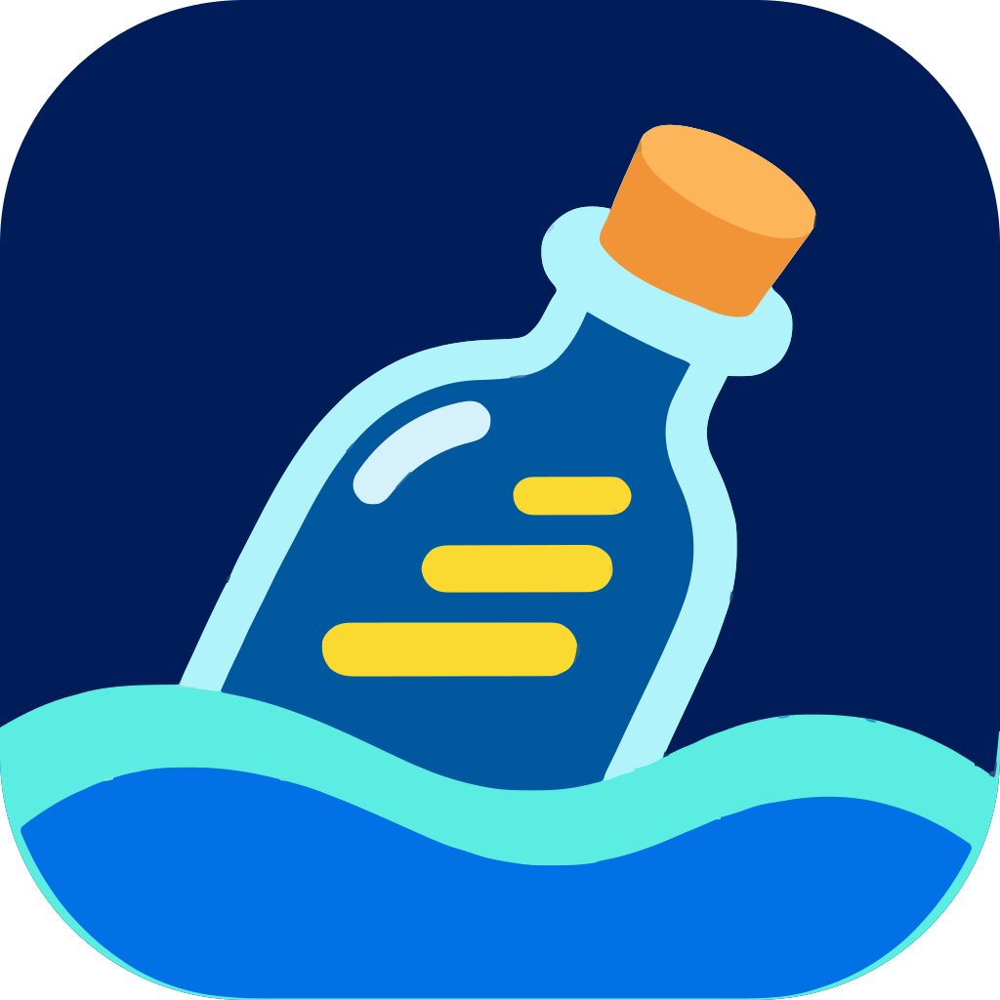

Reqcove
Hand your iPhone's HTTP(S) traffic to an AI agent over MCP, from anywhere.
iPhone の HTTP(S) 通信を、どこからでも、AI エージェントに MCP で渡す。
The iPhone picks your computer as its Tailscale exit node, the computer its traffic goes out through. Reqcove, on that computer, decrypts and records the traffic to the hosts you allow, and gives the records to your agent over MCP (the protocol that gives an agent its tools). Wi-Fi or 5G, with the iPhone on your desk or far away.
iPhone は、お使いのコンピュータを Tailscale の Exit Node（iPhone の通信の出口になるコンピュータ）として選びます。そのコンピュータで動く Reqcove が、許可したホストへの通信を復号して記録し、MCP（エージェントにツールを渡す仕組み）でエージェントに渡します。Wi-Fi でも 5G でも、iPhone が手元にあっても離れた場所にあっても使えます。
What you get
できること
An exit node, not a Wi-Fi proxy
Wi-Fi のプロキシではなく Exit Node
On the iPhone, you choose the exit node and trust Reqcove's CA once (the certificate that lets HTTPS be decrypted). There is no proxy to set on each Wi-Fi and no other VPN app to run instead of Tailscale: Tailscale stays on, and so does your tailnet (your Tailscale network).
iPhone では、Exit Node を選び、Reqcove の CA（HTTPS を復号できるようにする証明書）を一度信頼するだけです。Wi-Fi ごとにプロキシを設定することも、Tailscale の代わりに iPhone で VPN 型のアプリを動かすこともありません。Tailscale はオンのままで、tailnet（自分の Tailscale のネットワーク）もそのまま使えます。
Only the hosts you allow
記録するのは許可したホストだけ
Requests to other hosts are not recorded, and Apple's hosts always pass undecrypted. The secrets Reqcove recognises (tokens, keys, cookies, passwords) are masked as they arrive. Records stay in memory and are gone when reqcove run stops.
ほかのホストへのリクエストは記録しません。Apple のホストへの接続は常に復号せずに通します。Reqcove が見分けられるシークレット（トークン、鍵、Cookie、パスワード）は、届いた時点でマスクします。記録はメモリの中だけにあり、reqcove run を止めると消えます。
Your agent reads it over MCP
エージェントは MCP で読む
Tools give it a summary of the traffic (counts by host and status), lists and search, one request's headers and bodies, and the TLS handshakes a device refused, with clues about certificate pinning or an untrusted CA. Ask "which requests to api.example.com failed in the last ten minutes?"
通信の要約（ホストやステータスごとの件数）、一覧と検索、1 件のヘッダーとボディ、デバイスが拒否した TLS ハンドシェイク（証明書ピンニングや、まだ信頼していない CA を調べる手がかり）を、ツールで読めます。「この 10 分間で api.example.com へのリクエストのうち、失敗したものは？」と聞けます。
Manage what is recorded, and the settings
記録するホストと設定を管理する
reqcove console opens Reqcove's control page in your browser: its status, the hosts to add or remove, the settings and a restart. An agent cannot change these through MCP. It can only ask to record another host, and you approve it on that page or in the terminal. More
reqcove console を打つと、Reqcove の管理画面がブラウザで開きます。状態の確認、記録するホストの追加と削除、設定の変更、再起動ができます。エージェントは MCP ではこれらを変えられません。記録するホストを足すよう頼めるだけで、承認するのはあなたです（管理画面かターミナルで）。詳しく
With RoamRun, the real app
RoamRun と使えば実機のアプリで
RoamRun, a separate tool, lets an agent see and operate an iPhone (iOS 27 or later). Register both as MCP tools: the agent operates the real app, then uses wait_for_flows to read the requests that action sent. Starting RoamRun's device control needs the iPhone on Wi-Fi, and a one-time setup for each device. RoamRun (GitHub)
別のツールの RoamRun を使うと、エージェントが iPhone の画面を見て操作できます（iOS 27 以降）。両方を MCP のツールとして登録すると、エージェントが実機のアプリを操作し、その操作で送られたリクエストを wait_for_flows で読めます。RoamRun の画面操作を始めるには、iPhone が Wi-Fi につながっていることと、デバイスごとに一度の設定が必要です。RoamRun（GitHub）
Open source, one binary
オープンソースで、1 つのバイナリ
MIT licensed. Decryption is done by mitmproxy, open source too, which Reqcove fetches with uv (a tool that installs Python programs) on the first run. The macOS release binary is signed with a Developer ID and notarized by Apple.
MIT ライセンスです。復号はオープンソースの mitmproxy が行い、初回の起動時に Reqcove が uv（Python のツールを入れる道具）で取得します。macOS のリリースのバイナリは Developer ID で署名してあり、Apple の公証を受けています。
How it works
仕組み
- The iPhone picks your computer as its Tailscale exit node. Its traffic goes over the tailnet and out through
reqcove run. - mitmproxy decrypts the connections to the hosts you allow, with Reqcove's CA that the iPhone trusts. Other connections pass through without being decrypted.
- Each request to an allowed host is recorded in memory, its secrets masked as it arrives.
reqcove mcpserves the records to your agent as MCP tools.
- iPhone は、お使いのコンピュータを Tailscale の Exit Node として選びます。iPhone の通信は tailnet を通り、
reqcove runから出ていきます。 - 許可したホストへの接続は、iPhone が信頼した Reqcove の CA を使って、mitmproxy が復号します。ほかの接続は復号せずに通します。
- 許可したホストへのリクエストを、届いた時点でシークレットをマスクして、メモリに記録します。
reqcove mcpが、その記録を MCP のツールとしてエージェントに渡します。
Install
インストール
brew trust --formula mh-mobile/tap/reqcove
brew install mh-mobile/tap/reqcoveThen, in a terminal, reqcove setup asks for the iPhone's name in your tailnet and the hosts to record, and writes a config file. Start it with reqcove run. The first time, open the login URL it prints (reqcove links prints it too) to sign in to Tailscale and add Reqcove to your tailnet. After signing in, approve Reqcove as an exit node in the Tailscale admin console. reqcove status shows the steps left.
続いて、ターミナルで reqcove setup を実行します。tailnet での iPhone の名前と記録するホストを聞いて、設定ファイルに書きます。reqcove run で起動します。初回は、表示されるログイン用の URL（reqcove links でも出せます）を開いて Tailscale にログインし、Reqcove を tailnet に加えます。ログイン後、Tailscale の管理画面で Reqcove を Exit Node として承認します。残っている手順は reqcove status で確認できます。
reqcove setupreqcove runOn the iPhone: in the Tailscale app, choose the exit node reqcove; scan the CA's QR code (reqcove run shows it; reqcove links prints it too), install the profile in Settings › Profile Downloaded, and trust it in Settings › General › About › Certificate Trust Settings. For Claude Code, give the agent the tools with claude mcp add reqcove -- reqcove mcp.
iPhone では、Tailscale アプリで Exit Node に reqcove を選び、CA の QR コード（reqcove run が表示します。reqcove links でも出せます）を読んで、「設定 › プロファイルがダウンロード済み」でプロファイルを入れ、「設定 › 一般 › 情報 › 証明書信頼設定」で信頼します。Claude Code には claude mcp add reqcove -- reqcove mcp でツールを渡します。
Or download a binary from GitHub Releases. Full steps: README and the guide.
GitHub Releases からバイナリをダウンロードすることもできます。詳しい手順は README とガイドにあります。
Requirements
必要なもの
- macOS on Apple silicon, or Linux (amd64 or arm64)
- uv (Homebrew installs it): Reqcove fetches mitmproxy and Python with it on the first run
- A Tailscale tailnet, and the Tailscale app on the iPhone
- The computer must stay awake while the iPhone uses it as its exit node (while the computer sleeps, the iPhone has no internet)
- Apple シリコンの macOS、または Linux（amd64 または arm64）
- uv（Homebrew で入れれば一緒に入ります）。初回の起動時に、Reqcove が uv で mitmproxy と Python を取得します
- Tailscale の tailnet と、iPhone にインストールした Tailscale アプリ
- iPhone が Exit Node として使っている間は、コンピュータをスリープさせないこと（スリープ中、iPhone はインターネットにつながりません）
What it does not do
しないこと
It cannot find a secret that has neither a telling name nor a known form (such as a Bearer token or a JWT), and it does not mask personal data such as e-mail addresses. While the iPhone trusts the CA, this computer can read the iPhone's HTTPS to any site, not only the hosts you allow. What the agent reads goes to its model provider. Apps that pin certificates refuse Reqcove's certificate. More in SECURITY.
名前からも形（Bearer トークン、JWT など）からもシークレットと分からない値は見つけられず、メールアドレスなどの個人情報はマスクしません。CA を信頼している間、このコンピュータは iPhone の HTTPS を、許可したホストに限らず読めるようになります。エージェントが読んだものは、そのモデルの提供元に送られます。証明書ピンニングをするアプリは、Reqcove の証明書を拒否します。詳しくは SECURITY にあります。